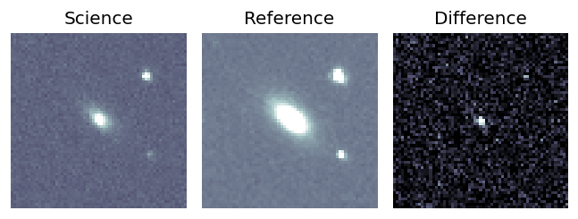
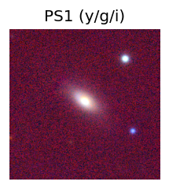
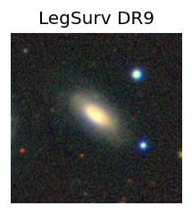
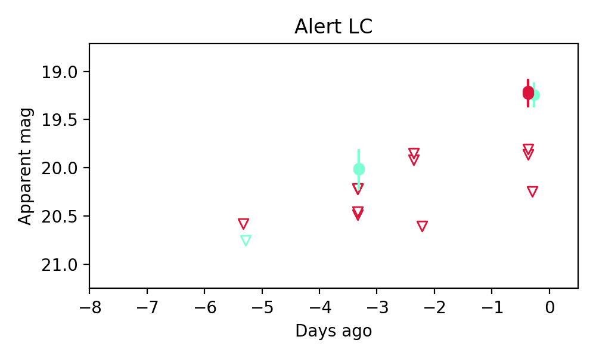
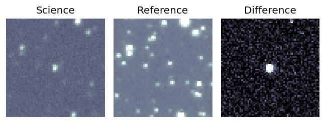
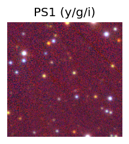
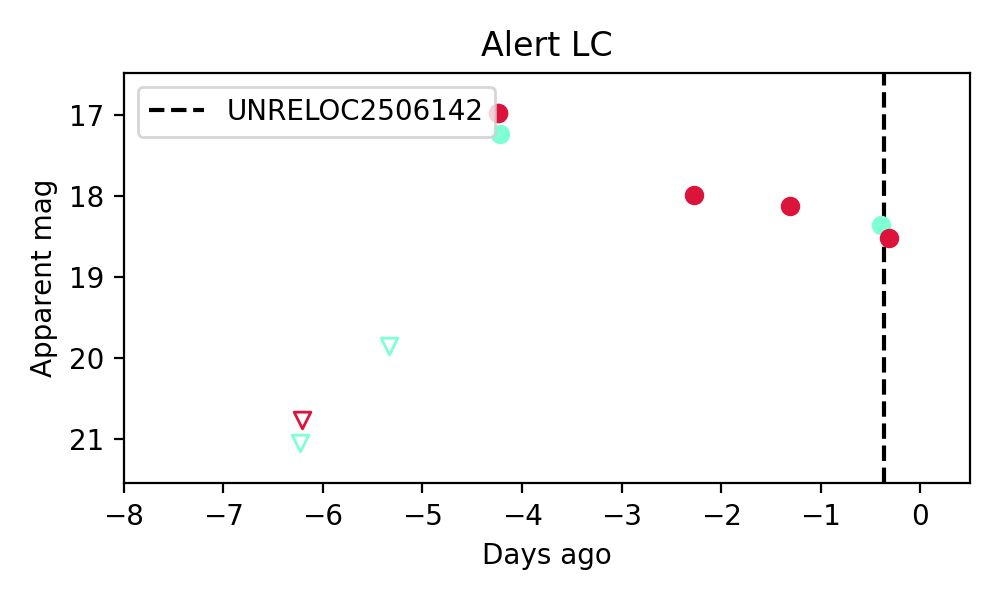
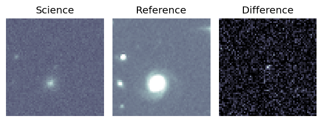
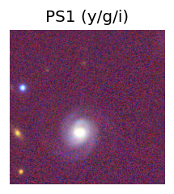
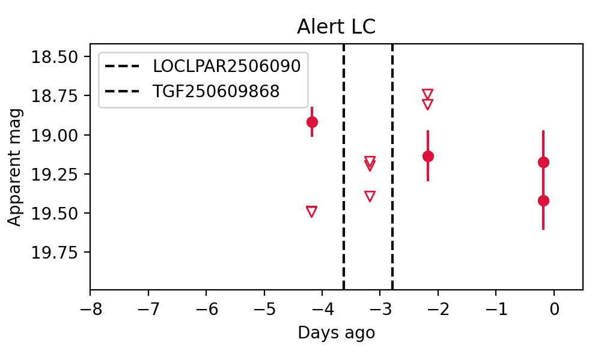

Candidate List 20250612Previous Day Next Day
Section 1: New Sources (age<1d) Section 2: Old (1-5d) sources observed last nightplaceholder
Section 1: New Afterglow/FBOT Cands Last Night (0)
Section 2: Older Sources Observed Last Night (3)
0. ZTF25aatupjy (Afterglow?) [Back to Top] [Share] [Trigger Swift] [Fritz] [Lasair]RA, Dec: 259.13337, 33.83315 17h16m32.01s, 33d49m59.33sGalactic (l, b): 57.21707, 33.45907 ext(g-r) = 0.035
Milliquas v6 (2 arcsec):Found NR (description), name = SDSS J171632.01+335000.2, QSO probability: 97 %
SDSS (10 arcsec):Found SDSS spec-z: z=0.09; peak abs mag = -19.34
PS1: 0 sources in 3 arcsec
LegacySurvey: 0 sources in 3 arcsec

Extinction-corrected gr color:
From alerts: -1.02 +/- 99 mag
Rise Rate:
g: 0.11 mag/day
r: 0.98 mag/day
i: -99 mag/day
Fade Rate:
g: -99 mag/day
r: 14.91 mag/day
i: -99 mag/day
1. ZTF25aauktrd (Afterglow?) [Back to Top] [Share] [Trigger Swift] [Fritz] [Lasair]RA, Dec: 279.10665, 16.47923 18h36m25.60s, 16d28m45.24sGalactic (l, b): 46.09847, 10.6732 ext(g-r) = 0.379
PS1: 0 sources in 3 arcsec
LegacySurvey: 0 sources in 3 arcsec

Extinction-corrected gr color:
From alerts: -0.13 +/- 0.02 mag
Rise Rate:
g: 1.9 mag/day
r: 1.92 mag/day
i: -99 mag/day
Fade Rate:
g: -99 mag/day
r: 0.5 mag/day
i: -99 mag/day
2. ZTF25aausgcc (Afterglow?) [Back to Top] [Share] [Trigger Swift] [Fritz] [Lasair]RA, Dec: 23.93183, 9.02775 1h35m43.64s, 9d 1m39.89sGalactic (l, b): 140.99385, -52.28394 ext(g-r) = 0.075
PS1: 0 sources in 3 arcsec
LegacySurvey: 0 sources in 3 arcsec

Rise Rate:
g: -99 mag/day
r: 0.18 mag/day
i: -99 mag/day
Fade Rate:
g: -99 mag/day
r: 0.48 mag/day
i: -99 mag/day